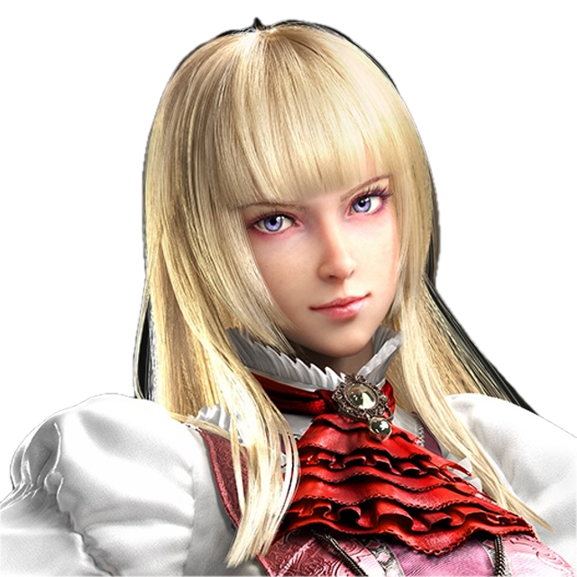

P26Valmentajaprofiili
xeroh96
Lili
Lili ja kunimitsu päähahmot. Mutta pelaan myös bryania ja dragunovia.
Pelannut tekken 5:sesta asti, mutta tekken 8 aikana alkanut oikeasti opettelemaan peliä. Tekken 8 tullut pelattua jotain tuhat tuntia ja ensimmäiset 800h tuli opeteltua miten pelata Lilillä. Osallistunut muutamiin online turnauksiin ja offline turnauksiin. Online weekly turnauksissa paras sijoitus 2. sija muutama top 8 sijoitus. Offline turnauksissa ohrly ja bissemply joissa 6 ja 4 sija.
Pelannut LoLia ja rata/rallipelejä paljon joissa molemmissa kuulunut parhaimmillaan sinne top 4% vaikka en kilpaillusesti ikinä ole yrittänyt pelata mitään peliä, mutta kyllä kuitenkin tavoitteena on päästä korkealle leaderboardeilla.
Matterhorn miinus frameilta. Mutta omaan osaamiseen kuuluu se, että halu opetella peliä syvemmin, mutta lähinnä huumori edellä ja katsoa mihin oma taitotaso ja tieto riittää.
En ole aikaisemmin valmentanut joten täysin uusi alue itselle. Mutta katsotaan minkälainen olisi mahdollisesti oikea oppimistapa ja mikä on tietämys tällä hetkellä pelistä. Jos täysin 0 tietämys, niin lähdetään täysin perusteista ja rakentaa mistä olisi mielenkiintoinen ja mukava tapa oppia ja pelata peliä.
Melkein aina discordista
Aina haluaa parantaa omaa osaamista pelistä, mutta kuitenkin pitää se tekeminen vielä mukavana ja kiinnostavana itselle. Mutta omiin vahvuksiin kuuluu se, että itseä ei haittaa hävitä pelissä mutta tavoitteena kumminkin aina voittaa vastustaja. Trial and errorin kautta enemmän kokemusta peliin.
Disgusting lili player t: online weeklyt
Ota yhteyttä Discordissa
xeroh96